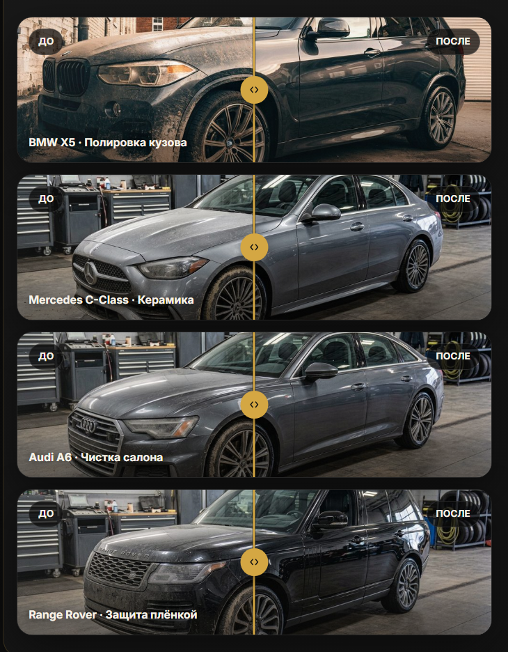
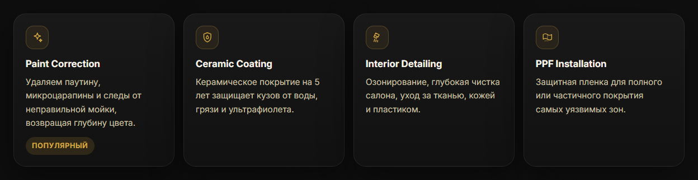

Кейс · лендинг под заявки
AUTOCLEAN — лендинг студии детейлинга
У детейлинга ровно один убедительный аргумент — «до и после». Всё остальное на странице обслуживает его: сравнение работает мышью, пальцем и клавиатурой, а заявка отправляется в два поля.
- 0зависимостей: ни фреймворка, ни сборки, ни библиотек
- 4работы «до и после» с перетаскиваемой шторкой
- 13иконок нарисованы вектором вместо эмодзи
- 1внешний домен — только шрифты
Задача
Студия премиального детейлинга: полировка, керамика, защитная плёнка, химчистка салона. Клиент такой студии выбирает глазами и платит за результат, который трудно описать словами — «глубина цвета», «блеск как из салона». Значит страница должна не рассказывать, а показывать.
Отсюда два требования: сравнение до и после в центре страницы, и скорость. Человек, который смотрит машины с телефона в дороге, не станет ждать загрузки трёх мегабайт скриптов.
Шторка «до и после»
Две фотографии наложены друг на друга, верхняя обрезается по вертикали
и следует за ручкой. Реализовано на clip-path, без
библиотек — весь механизм умещается в несколько десятков строк.

Почему указатель, а не мышь
Обработчики повешены на события указателя, а не отдельно на мышь и
касания. Одна ветка кода вместо двух, и палец на телефоне работает
так же, как курсор. setPointerCapture удерживает
перетаскивание, даже если палец ушёл за пределы карточки — иначе
шторка застревала бы на полпути при резком движении.
И клавиатурой тоже
Ручка получает фокус, объявлена как ползунок и слушает клавиши:
← и → шагают по 5%, Home и
End бросают шторку к краям. Текущее положение отдаётся в
aria-valuenow, поэтому экранный диктор проговаривает
процент, а не молчит.
Клавиши Home и End добавлены после проверки: роль ползунка уже была объявлена, а обрабатывались только стрелки. Роль, которая обещает больше, чем умеет, хуже её отсутствия — диктор объявляет ползунок, человек жмёт End и не получает ничего.
Иконки: вектор вместо эмодзи
В карточках стояли эмодзи. Выглядит быстро и бесплатно, но рисует их шрифт операционной системы: на Windows они плоские и разноцветные, на macOS объёмные, на части Android подменяются пустым квадратом. Одна и та же страница выглядела по-разному у разных людей, а пёстрые цвета спорили с золотым акцентом макета.

Три значка пришлось переработать уже после того, как я посмотрел их в готовом виде: в мелком размере значок запаха сливался с соседним солнцем, кресло читалось как принтер, а плёнка — как коробка. Стали волны, щётка и укрывающий лист.
Заодно это починило озвучку: раньше диктор зачитывал название эмодзи («знак запрета», «денежные купюры с крыльями»), теперь — то, что значок обозначает.
Форма заявки
Пять полей и отметка согласия на обработку данных. Согласие — не украшение: форма собирает имя и телефон, то есть персональные данные, и без отметки заявка не отправляется. Телефон вводится через маску, ошибки показываются под конкретным полем, а не одной строкой сверху.
Скорость
Ни фреймворка, ни сборщика, ни библиотек — только разметка, стили и один файл скриптов. Единственный внешний домен на всей странице — шрифты. Фотографии работ грузятся лениво: пока посетитель читает первый экран, галерея ещё не тратит его трафик.
Побочный плюс такого подхода — долговечность. Через год здесь нечему сломаться от обновления зависимостей, потому что зависимостей нет.
Стек
Работа учебная, не по заказу клиента: студия вымышленная, фотографии работ взяты для примера. Вёрстка, шторка сравнения, иконки и форма — мои.
Нужен лендинг, который приносит заявки?
Если результат вашей работы видно глазами — его надо показывать, а не описывать. Расскажите, что вы делаете и кому продаёте, — предложу, как это подать, и назову срок и цену. Разбор задачи бесплатный.